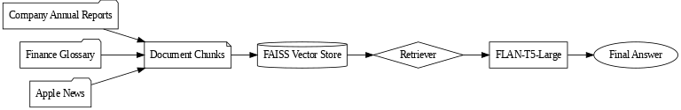
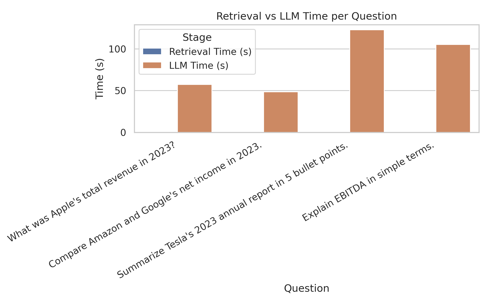
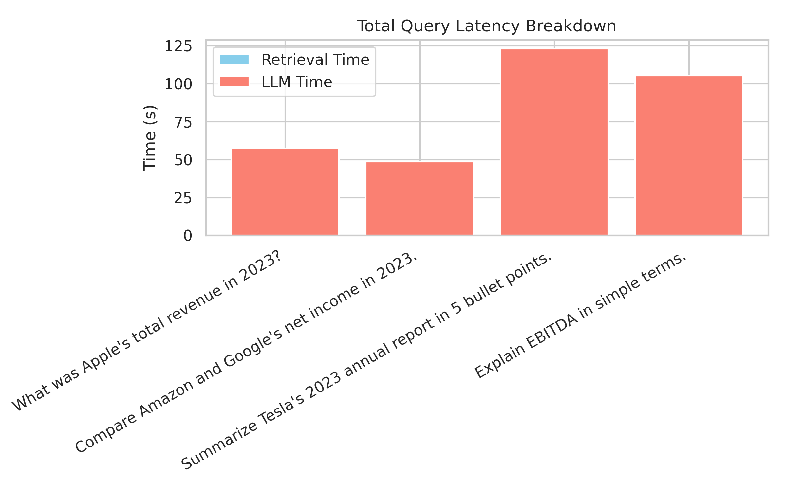

About the Project
This project implements Retrieval-Augmented Generation (RAG) combined with the FLAN-T5 language model to answer financial questions. It processes official company annual reports, a financial glossary, and recent news articles to deliver accurate and context-aware responses.
Features
- Retrieves and processes PDF annual reports (Apple, Tesla, Microsoft, Amazon, Google)
- Uses FAISS vector database for efficient document retrieval
- Provides financial definitions from the Investopedia glossary
- Includes smart routing for financial vs. general queries
- Displays performance metrics with visual charts
System Architecture
Performance Metrics
 GitHub Repository
Find the complete project code on our GitHub repository.